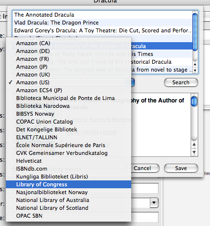

Fetching Information Online
The subsystem of Books that is responsible for retrieving book information online is called Quickfill. Quickfill is implemented using plugins.
To "quickfill" a book, you need to input enough information to identify the book (you can use barcode scanners and your iSight in addition to typing) and click the Quickfill button. Books will contact your preferred Quickfill source and attempt to retrieve the information. If this is successful, a list of potential matches will be presented.
A Successful Quickfill
Select the appropriate item and click the Save button. The new values will be copied to the selected book record.
If the search is unsuccessful, you can look in other sources. Simply select a new source from the pulldown and click the Search button. That source will be queried instead.

Other Quickfill Sources
To install additional Quickfill sources, open the Plugin Manager from the Window menu.
Did You Know?
We're always looking for new Quickfill sources. If your area isn't represented in the Books options, see if you can locate a local library in the IndexData database. If you do find one, forward us the details and we'll see if we can craft a suitable Quickfill plugin.